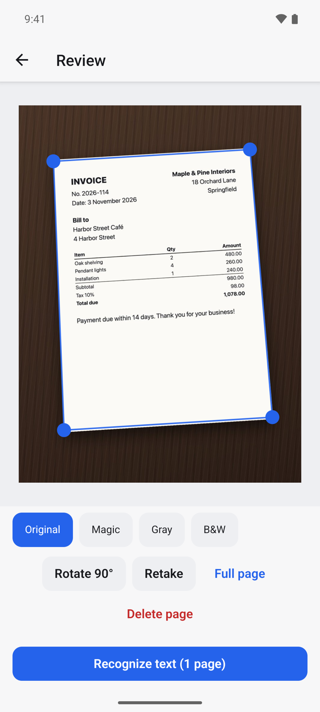
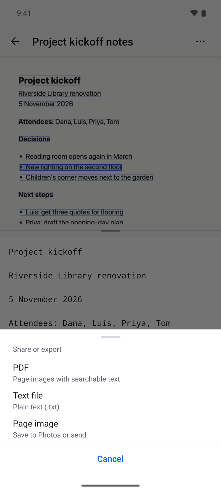

What it does
OCRScanner photographs a paper page, straightens it and reads the text on your phone. You can edit and copy the text, search every scan you have made, and share a scan as a searchable PDF, a text file or an image.
- Text recognition runs on your device and works without internet.
- No account. Your scans stay on your phone and are never uploaded.
- Import a PDF, or share images from other apps on Android.
- Free with ads. A one-time Premium purchase removes ads and adds more languages.
Get started
- Open OCRScanner. The Scans list is empty the first time.
- Tap Scan to use the camera, or Import to pick photos you already have.
- Allow the camera when Android asks. Import does not need access to your whole photo library.

Scan a page
- Tap Scan and point the camera at the page. Tap the shutter button to take the photo.
- On Review, the page edges are found for you. Drag a blue corner if an edge is off, or tap Full page to keep the whole photo.
- Pick a filter to clean the page: Original, Magic, Gray or B&W.
- Tap Rotate 90° if the page is sideways, or Retake to photograph it again.
- Tap Recognize text.

To scan several pages into one document, open the scan later, tap ⋯ and choose Add pages.
Import a PDF
OCRScanner reads up to 20 pages of one PDF, or 50 with Premium. Every page is read as an image, so text already inside the PDF is not used.
- Choose one PDF in your phone's file picker. No storage permission is needed.
- On Review, check the pages. If the PDF is longer than the limit, Review tells you how many pages were left out.
- Tap Recognize text.
Share images from other apps
This works on Android.
- In your gallery or another app, select up to 20 images and tap share.
- Choose OCRScanner.
- Unlock the app if App lock is on. The images open on Review as a new scan.
If you have unsaved pages open, the app asks before it replaces them.
Read, edit and copy the text
- After recognition, Result shows the page on top and its text below.
- Tap a line of text to see where it is on the page. Tap a word on the page to jump to its line.
- Lines the app is unsure about are highlighted, so you know what to check.
- Tap Edit to correct the text, Copy to copy it, or Share to send it.
- Tap Save to keep the scan in your list.

Find a scan by its text
- On Scans, tap Search text in your scans.
- Type a word. Every scan that contains it is listed, with the match in bold.
- Tap a result to open the scan at that match.

To see only the scans with one tag, tap that tag under the search field. Search then looks only inside those scans. Tap the tag again to see all scans.
Share or export
- Open a scan and tap the share button.
- Choose a format:
- PDF: the page images with searchable text behind them.
- Text file: plain text (.txt).
- Page image: save to Photos or send.
- Pick the app to send it to.

Rename, tag and delete
- Open a scan and tap ⋯.
- Choose Rename to change the title, or Edit tags to add tags separated by commas.
- Choose Recognize text again to read the pages again in another text language. Any text you edited is replaced.
- Choose Delete scan to remove it from your phone.
Back up and restore your scans
- On Scans, tap the settings icon in the top right.
- Under Storage, tap Back up scans. All your scans are packed into one file.
- Pick where to save or send the file. The file is not encrypted, so keep it somewhere safe.
- On a new phone, tap Restore from backup and choose the file. The app asks before it replaces every scan on the phone with the ones in the backup.
Lock the app and change settings
- On Scans, tap the settings icon in the top right.
- Turn on App lock to require your fingerprint, face or screen lock before your scans open.
- Under Text language (OCR), pick the script of your documents. Latin covers English, Spanish, French, German, Indonesian and more. The app suggests the one your phone's language uses.
- Tap App language to use the app in a different language from your phone.
- Choose Image quality (Balanced or Full) and the Theme (System, Light or Dark).

Premium
Premium is one payment, not a subscription. Open Settings and tap See Premium. It gives you:
- No ads.
- Chinese, Japanese and Korean text, plus Hindi and other Devanagari text on Android.
- Merging several scans into one PDF or text file.
- Importing longer PDFs: up to 50 pages instead of 20.
If you bought Premium before, tap Restore purchase on the Premium screen.
Questions
Does it work offline? Yes. Scanning, text recognition, search and export all run on your phone.
Where are my scans kept? Only on your device. If you uninstall the app, the scans are removed with it, so tap Back up scans in Settings first to keep them.
The text has mistakes. What can I do? Retake the photo in good light with the page flat, try the Magic or B&W filter, and check that Text language (OCR) matches the document. You can also fix single words with Edit.
Can it read handwriting? It is made for printed text. Handwriting is often read wrongly.
Privacy
Your documents are never uploaded. The free version shows ads from Google AdMob. Read the full privacy policy.